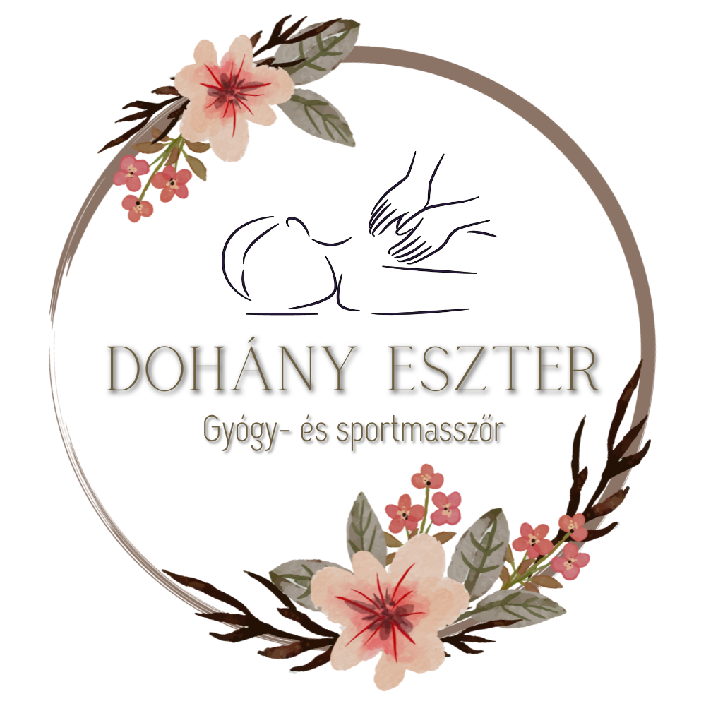

DOHÁNY ESZTER
Gyógy- és sportmasszőr


[Itt írd le röviden, hogy miről szól a weboldal, milyen szolgáltatásokkal foglalkozik, és bármit, amit fontosnak tartasz. Esetleg egy rövid bemutatkozás.]
| Szolgáltatás | 30 perc | 60 perc | 90 perc |
|---|---|---|---|
| Nyak- és vállövi masszázs | 6.000 | - | - |
| Hátmasszázs | 6.000 | 9.500 | - |
| Lábmasszázs | 6.000 | 9.500 | - |
| Frissíttő talpmasszázs | 6.000 | - | - |
| Teljes testmasszázs | - | 9.500 | 13.000 |
| Frissítő arcmasszázs | 5.500 | - | - |
| Relax masszázs | 5.500 | 8.500 | 11.500 |
| Kinesio Tape | Kezelés mellé - 2.000 | Önállóan - 3.500 | |
[Ha bármilyen kérdése van, vagy szeretne kapcsolatba lépni, itt találhatóak az elérhetőségek:]